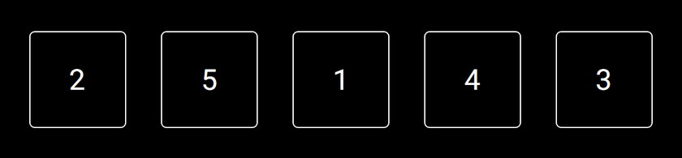
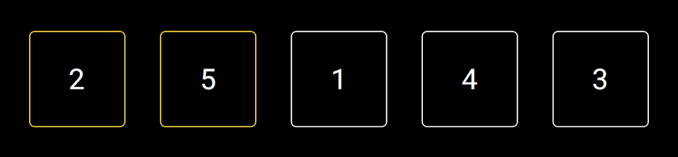
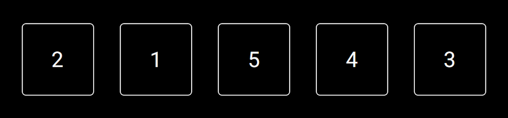
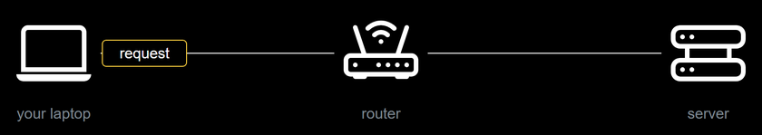
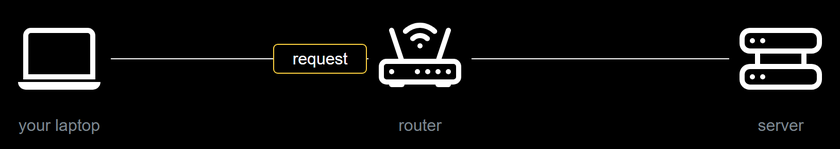
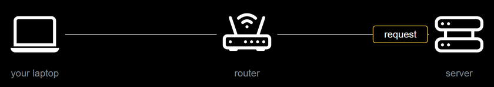
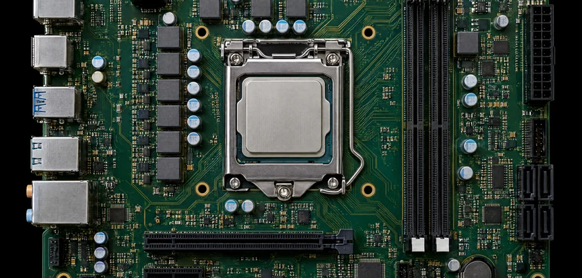
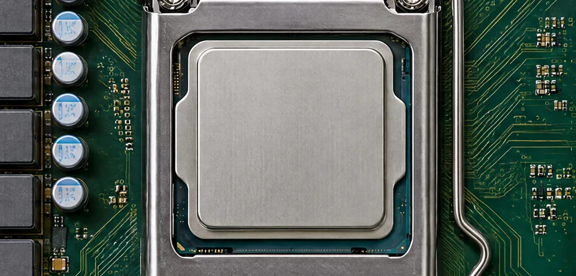
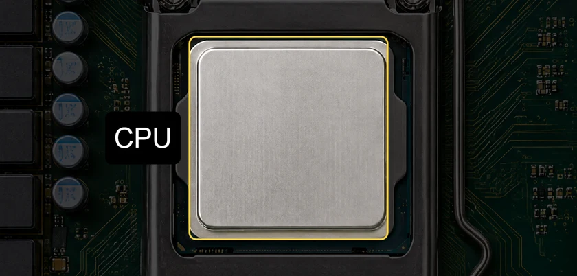

Animationen nach Lernziel
Die Bildfolgen zeigen Ausschnitte aus dem spielbaren Deck. Mit der rechten Pfeiltaste weiterschalten, mit R die aktuelle Animation wiederholen.
Den nächsten Vergleich vorhersagen
Sortierung abspielen →Wähle eine Eingabe, an der beide Fälle vorkommen. Frage vor jedem Klick, ob das Paar seine Plätze tauscht. Auch der Vergleich ohne Tausch bekommt einen erkennbaren Endzustand.



sort.step(
sort.par(sort.color("v2", "yellow", { dur: 300 }), sort.color("v5", "yellow", { dur: 300 })),
sort.swap("prompt0", "prompt1", { dur: 0 }));Eine Anfrage durchs Netz verfolgen
Netzwerk abspielen →Laptop, Router und Server bleiben an ihrem Platz. Am Router wartet die Anfrage auf den nächsten Tastendruck. Hier kann das Publikum erklären, wohin der Router sie weiterleitet.



net.step(net.show("request", { dur: 300 }), net.along("request", "route1", { dur: 1000 }),
net.hold(),
net.along("request", "route2", { dur: 1000 }), net.hide("request", { dur: 200 }), net.pulse("server"));Der Halt liegt innerhalb eines Animationsabschnitts. Soll die Routerposition auch im PDF eine eigene Seite erhalten, die beiden Wegstücke auf zwei step()-Aufrufe verteilen.
Ein Detail im Gesamtbild finden
Kamerafahrt abspielen →Zuerst den Prozessor auf der ganzen Platine suchen lassen. Ein Tastendruck startet die Annäherung. Ausschnitt, Rahmen und Aussparung im abgedunkelten Foto werden aus demselben Rechteck berechnet.



zoom.step(zoom.camera(detailView, { dur: 2500 }));
zoom.step(zoom.par(zoom.show("spot", { dur: 1000 }), zoom.draw("cpu-box", { dur: 1000 })));
zoom.step(zoom.show("cpu-label", { dur: 400 }));